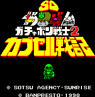
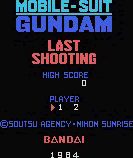

Gundam - MSX Games

- Genre: War strategy simulation
You pick your officers and troops and try to beat your opponent.

Each level has a different objective. The first level has your character dodge falling debris before entering his mobile
suit. The second level has you shooting other mechs and gun emplacements.
Anime Video Game Resource Center © 1998 by Luis A. Cruz